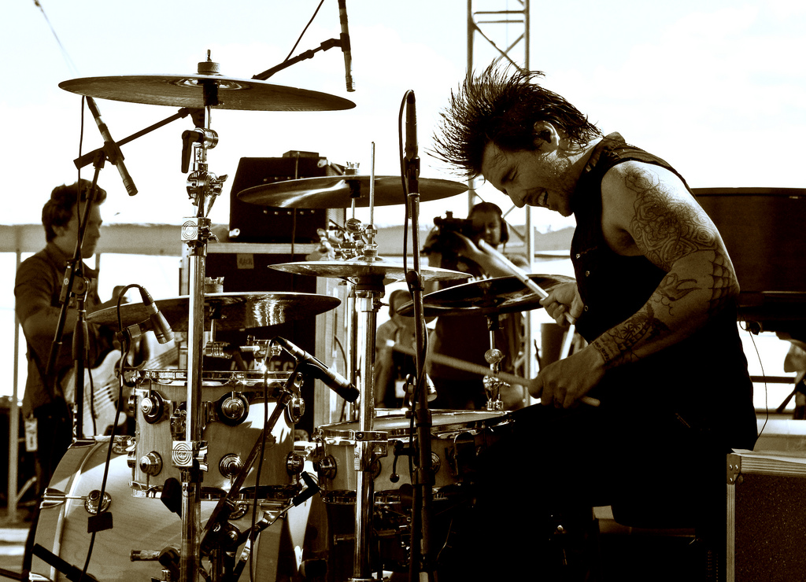

My music taste has evolved a lot over the years. From Listening to Worship music like Hillsong United , Chris Tomlin , Kutless , and Third Day . This were I not started getting interested in music. These where the first bands that I saw live as a kid. I specifically remember going with my youth group to a giant youth conference called Aquire the Fire at the University of Massachusetts Lowell's stadium to see my first concert. The show was Unhindered, Building 429, and headlining was Kutless. I had never realized that you could play music infront of so many people. I specifically remember thinking to myself, "Wow, this is insane. I can't imagine what it's like to be infront of this many people." While all the bands were on stage, I couldn't help but be focused on the drummers. But of the all three of drummers, there was one who stuck out the most. Jeff Gilbert: 
The crazy mohawk, the head banging, playing with every single fiber of his being. It was something that I couldn't help but be captivated by. It was in so many ways other worldly. After that, I was just amazed that someone could be so passionate about something. After that, I didn't really go to concerts for a while. And with that my musical taste started to change. I started liking music that had the same enjoy that Jeff was playing with. I started listening to bands that had reverb in their guitars, bands that had some attitude. I started listening to bands like Paramore , All Time Low , Nirvana , and Foo Fighters . My Mom, not really a fan of such music, told me that I shouldn't be listening to that kind of music. Of course, being a young teenager, I did quite the opposite. Before long I was getting into music that was not only heavy, but had what both my parents couldn't stand: SCREAMING. I was, and still do, listen to bands along the line of Killswitch Engage , Underoath , Memphis May Fire , and August Burns Red .
Of course with this the evolution of my musical pallet, being a musician, my style of playing matched what I was listening to. I started to play harder, I played with more energy, I played with more intensity. At the time I was most in church, which does not normally call for the bast beats and double bass beats that metal does. So I learned to get this style of playing out through dynamics. This became one of my greatest tools as both a drummer and as an overall musician. It taught me how to get people involved and intern, it taught me an important lesson at a young age about the "feeling" of music. Not just playing a song like it is written, but adding personality, flair, and putting your own character into a song.
Taste in music was and is a huge part of my identity. It brought me to be the person that I am today. Music is not just a set of notes over a period of three or four minutes. Music is an extension of our personality, our character, and for some our biggest dreams and deepest desires.
Back to Home.